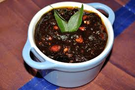
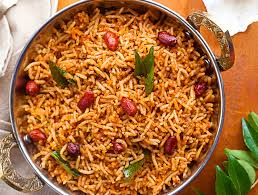

COME! LET'S PREPARE PULIYOGARE.

INGREDIENTS :
FOR PULIYOGARE GOJJU:
- 100 grams tamarind
- 2 cup hot water
- ¼ cup oil¼ cup oil
- 1 tsp mustard
- 1 dried red chilli
- pinch hing / asafoetida
- few curry leaves
- ½ tsp turmeric
- 50 grams jaggery
- 1 tsp salt
FOR PULIYOGARE MASALA POWDER:
- 2 tbsp sesame
- 2 tsp oil
- 2 tbsp coriander seeds
- 1 tbsp cumin / jeera
- 1 tbsp urad dal
- 1 tbsp chana dal
- ½ tsp mustard
- ½ tsp pepper
- ¼ tsp methi / fenugreek
- ¼ cup dry coconut, sliced
- 7 dried red chilli
- few curry leaves
FOR RICE:
- 2 tbsp oil
- 1/2 tsp mustard
- 1 tsp chana dal
- ½ tsp urad dal
- 2 tbsp peanuts
- 1 dried red chilli
- few curry leaves
- 2 cup cooked rice
- ½ tsp salt
- 2 tbsp coconut, grated
It is karnataka style traditional rice based recipe,
and is also called as pulihora and puliyodhari
in other south states
INSTRUCTIONS
firstly, in kadai heat 2 tbsp oil and splutter ½ tsp mustard, 1 tsp chana dal, ½ tsp urad dal and 2 tbsp peanuts.
now add 1 dried red chilli and few curry leaves. saute for a minute.
further, add prepared 2 tbsp puliyogare gojju and saute for a minute.
add in 2 cup cooked rice, ½ tsp salt and mix well.
mix unitl the rice is well combined with gojju. use your hands for best results.
further, add 2 tbsp coconut and mix well.
finally, enjoy puliyogare recipe with curd and papad.
notes:
firstly, soak the tamarind well, else it will not be easy to squeeze off the pulp.
also, boil the tamarind extract well else the raw smell will be present.
additionally, boil until the oil is separated from the gojju, to store puliyogare gojju for a longer time.
finally, puliyogare recipe tastes great when prepared with leftover rice.
INSTRUCTIONS TO DO WITH GOJJU
firstly, in kadai heat 2 tbsp oil and splutter ½ tsp mustard, 1 tsp chana dal, ½ tsp urad dal and 2 tbsp peanuts.
now add 1 dried red chilli and few curry leaves. saute for a minute.
further, add prepared 2 tbsp puliyogare gojju and saute for a minute.
add in 2 cup cooked rice, ½ tsp salt and mix well.
mix unitl the rice is well combined with gojju. use your hands for best results.
further, add 2 tbsp coconut and mix well.
finally, enjoy puliyogare recipe with curd and papad.